| 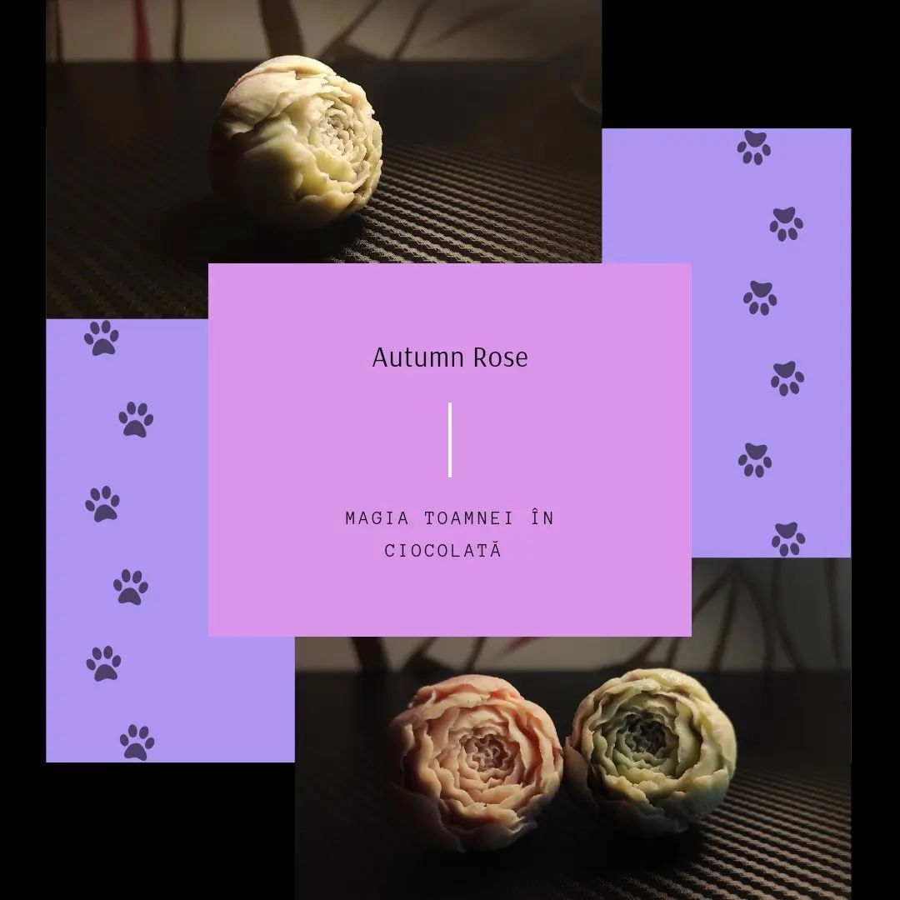 | Autumn Rose Trandafir roz, pentru romantici |
| Black Rose Trandafir negru, pentru iubitorii adevarati de ciocolata |
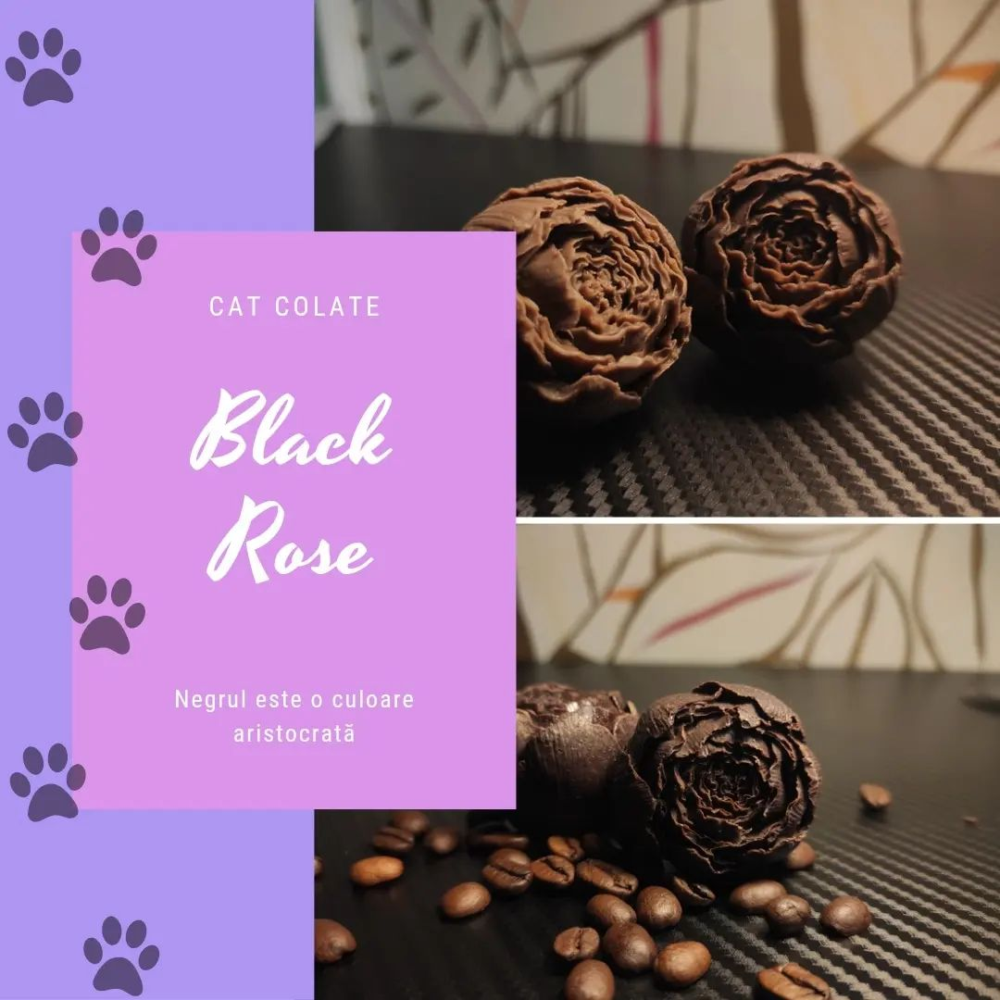 |
| 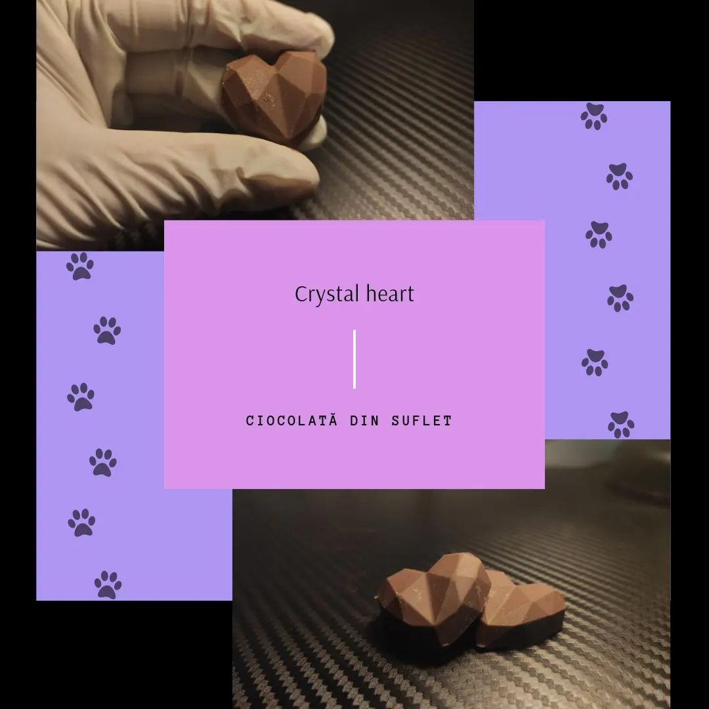 | Crystal Hearth Pentru manifestarea intentiilor cristalic de curate |
| Healing Rose Trandafir verde, pentru la care in inima e primavara |
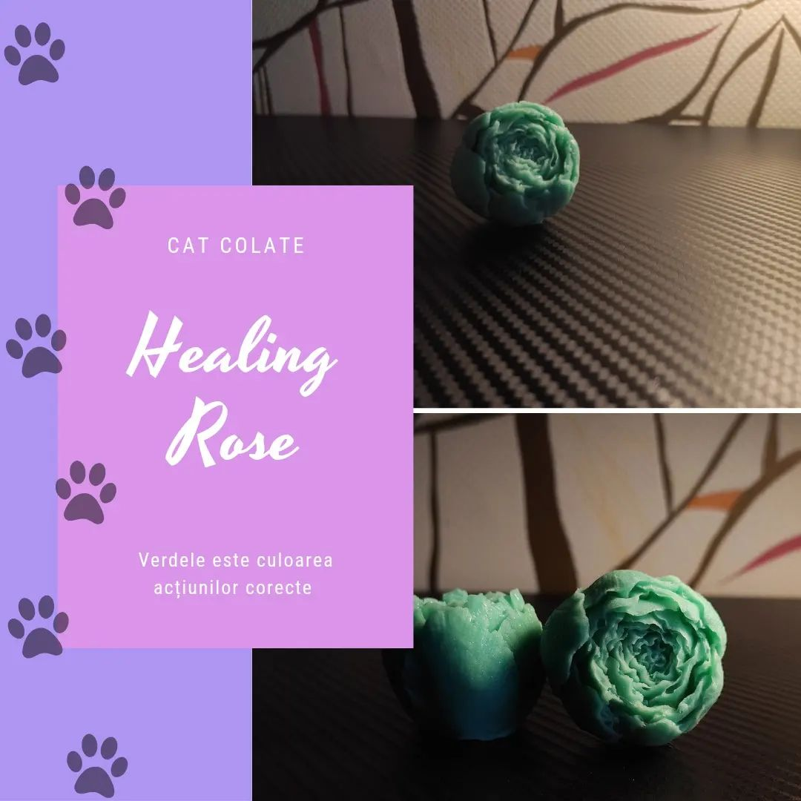 |
| 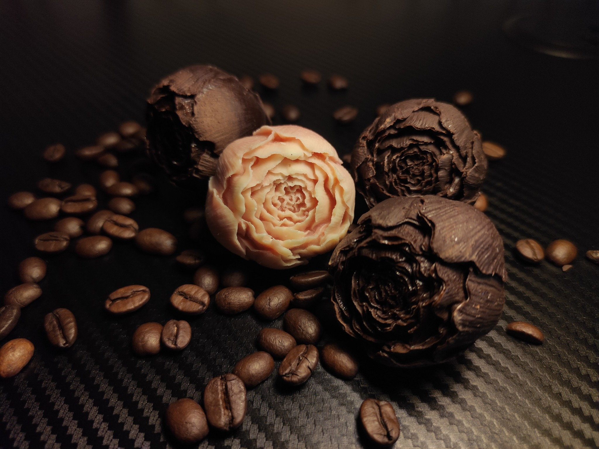 | Pink Black Bogatia de sentimente si subtilitatea gustului |
| Pink Rose Trandafir roz, pentru romantici |
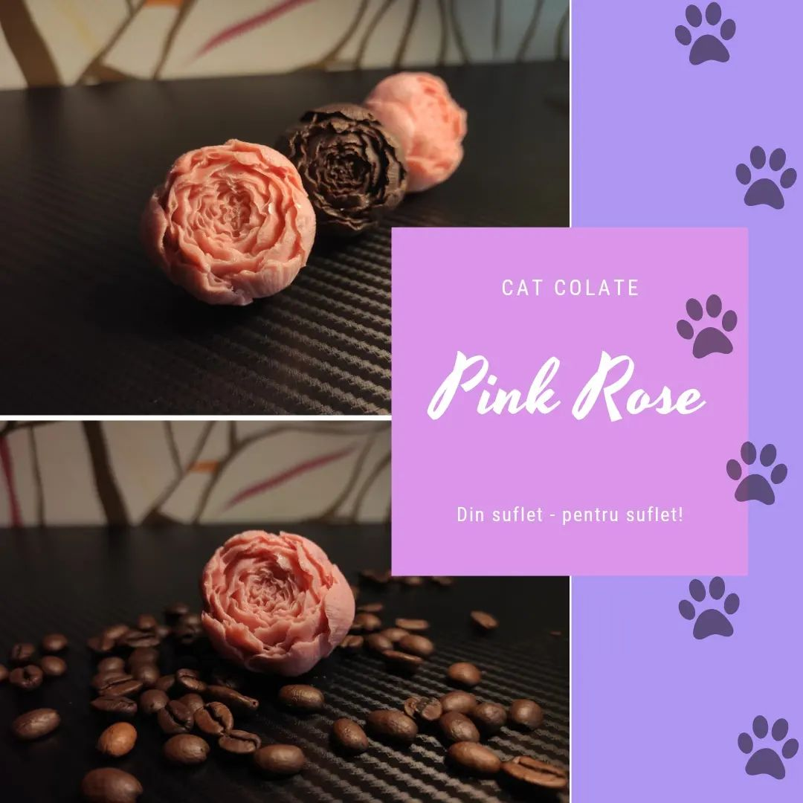 |
| 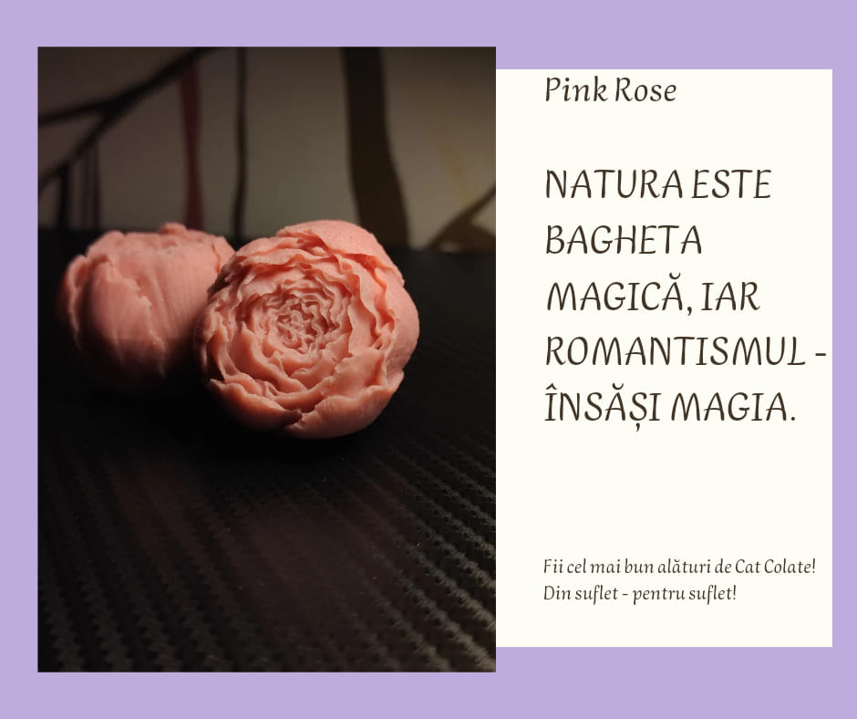 | Pink rose intense Culorile sunt intense, dar gusturile pur si simplu te fura |
| Summer Rose Focul inimii lumineaza si incalzeste pe toti cei aflati in preajma celui indragostit |
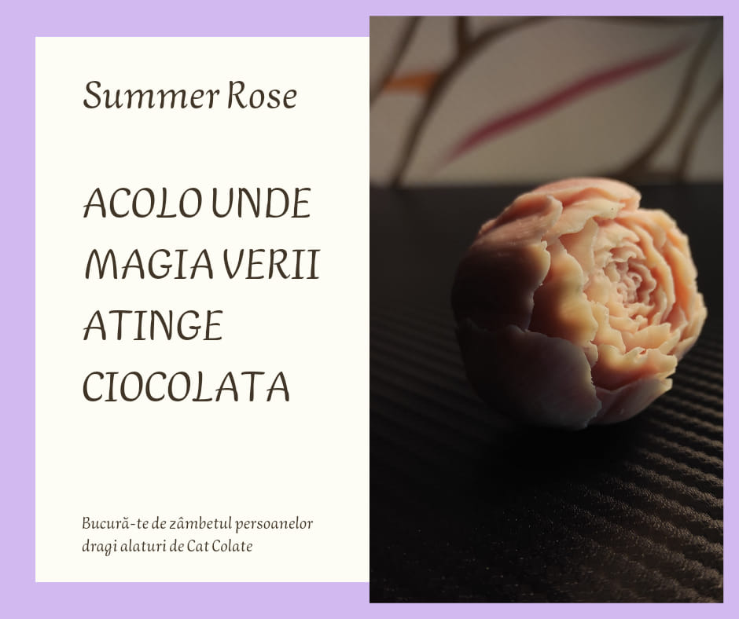 |
| 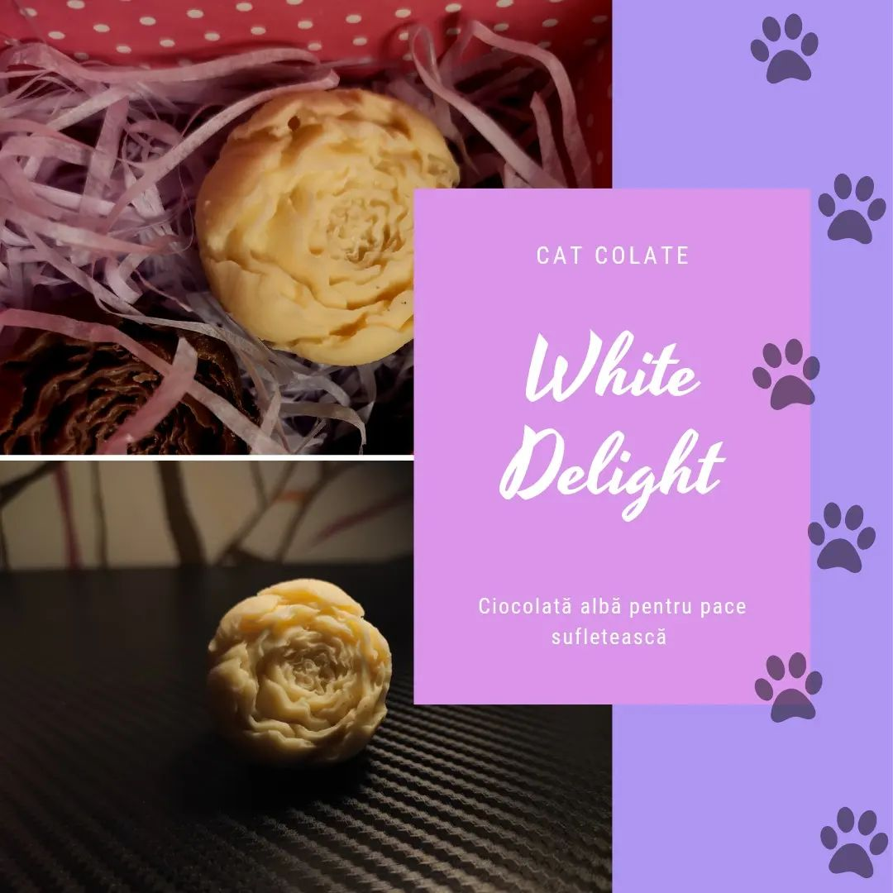 | White rose Puritatea sentimentelor si magia gustului |
| Cat Colate Pentru adevaratii iubitori de pisici viata este mai tarcata |
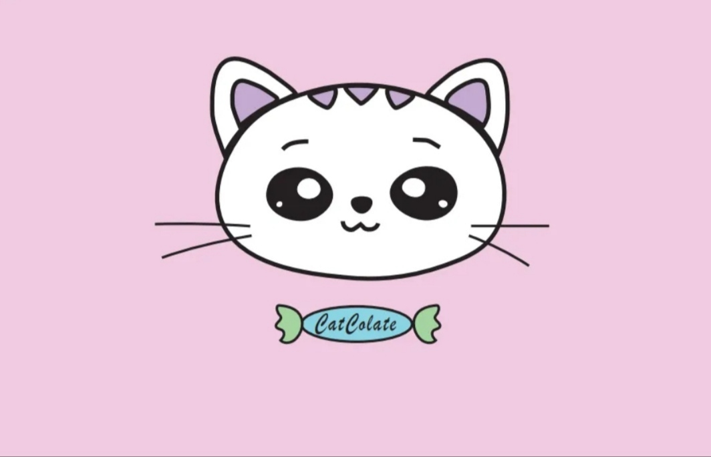 |
| 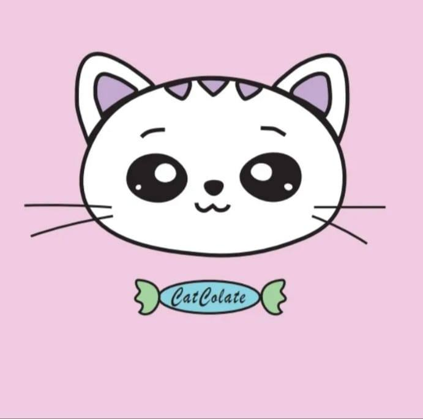 | Cat Colate Nu uitati si de prietenii tarcati |